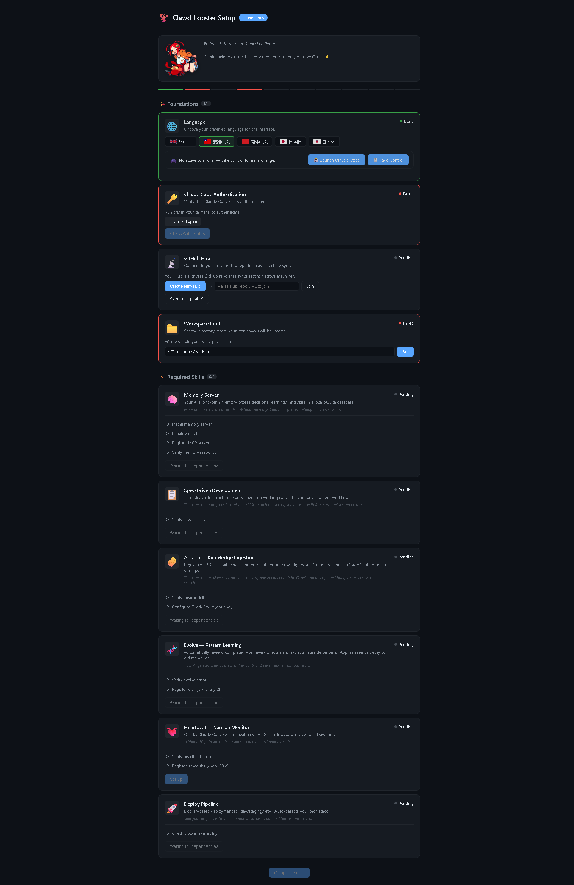
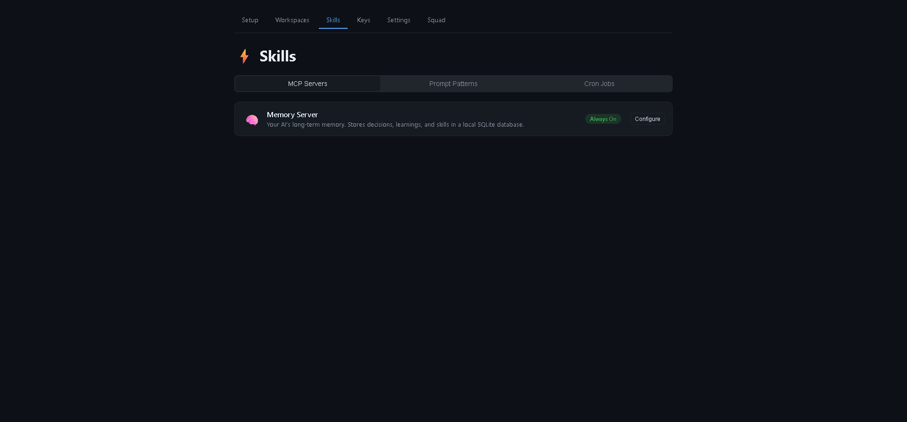

Your AI-native development framework. Claude Code guides you through setup — no manual configuration needed.
Clawd-Lobster is a skills wrapper for Claude Code that transforms it from a coding assistant into a full AI development platform. It adds persistent memory, automated learning, multi-agent orchestration, and project management — all guided by an AI-native onboarding experience.
SQLite-backed memory server with 28 MCP tools. Your AI remembers decisions, learnings, and skills across sessions.
Go from idea to working code with structured specs, AI review, and multi-agent execution (Architect, Reviewer, Coder, Tester).
Claude leads. Codex (GPT-5.4) reviews. Gemini validates. Three AI brains, one unified workflow.
Automatically extracts reusable patterns from completed work. Your AI gets smarter over time.
Docker-based deployment pipeline. Detect stack, generate configs, ship to dev/staging/prod.
Claude Code walks you through installation. No manual config files. The AI IS the installer.
One command to get started:
Prerequisites: Python 3.10+, Node.js 18+, Git, Claude Code CLI
Start the web dashboard and let Claude guide you:
This opens http://localhost:3333/onboarding — the Agent-Guided Skill Parade.
The onboarding walks you through 4 tiers of setup:
| Tier | Skill | What It Does | Type |
|---|---|---|---|
| Foundations | |||
| 🌐 Language | Choose your interface language (5 supported) | Required | |
| 🔑 Claude Auth | Verify Claude Code CLI is authenticated | Required | |
| 📡 GitHub Hub | Connect your private Hub repo for cross-machine sync | Required | |
| 📁 Workspace Root | Set where your workspaces live | Required | |
| Required Skills | |||
| 🧠 Memory Server | 28 MCP tools for persistent AI memory | Required | |
| 📋 Spec | Structured specification framework | Required | |
| 🧽 Absorb | Ingest knowledge from files, PDFs, emails | Required | |
| 🧬 Evolve | Automatic pattern learning (every 2h) | Required | |
| 💓 Heartbeat | Session health monitoring (every 30m) | Required | |
| 🚀 Deploy | Docker deployment pipeline | Required | |
| Power Skills (Optional) | |||
| 🤖 Codex Bridge | Delegate to GPT-5.4 for bulk work and reviews | Optional | |
| 💎 Gemini Bridge | Cross-model validation and architecture debates | Optional | |
| 📓 NotebookLM | Free RAG + content generation | Optional | |
| 🏢 Connect Odoo | ERP integration for business processes | Optional | |
Click "Launch Claude Code" in the dashboard. Claude enters your workspace and guides you conversationally through the remaining setup — explaining each skill, installing dependencies, and registering cron jobs.
The web dashboard updates in real-time as Claude works. You see progress on screen while talking to Claude in the terminal.
After setup, the persistent dashboard lets you manage everything:
MCP Servers, Prompt Patterns, and Cron Jobs — all configurable from the web.
Manage credentials for Claude, GitHub, Codex, Gemini, Oracle, and Odoo.
Language, workspace root, Hub info, and server configuration.

Clawd-Lobster uses an Agent-Guided Escape Room architecture:
Key design decisions from a 5-round three-agent debate (Claude + Codex + Gemini):